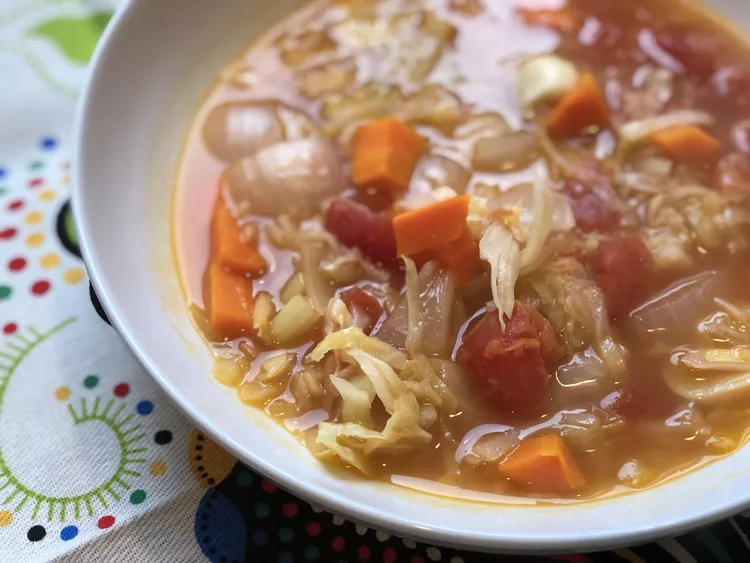

Instant Pot Vegan Cabbage Detox Soup

This simple vegan cabbage soup is perfect for a detox diet. It's a tasty recipe that's easy to make in your Instant Pot.
Ingridients
- 3 cups coarsely chopped green cabbage
- 2 ½ cups vegetable broth
- 1 (14.5 ounce) can diced tomatoes
- 3 medium carrots, chopped
- 3 stalks celery, chopped
- 1 medium onion, chopped
- 2 cloves garlic
- 2 tablespoons apple cider vinegar
- 1 tablespoon lemon juice
- 2 teaspoons dried sage
Combine cabbage, vegetable broth, diced tomatoes, carrots, celery, onion, garlic, vinegar, lemon juice, and sage in a multi-functional pressure cooker (such as Instant Pot). Close and lock the lid. Select high pressure according to manufacturer's instructions; set the timer for 15 minutes. Allow 10 to 15 minutes for pressure to build.
Release pressure using the natural-release method according to manufacturer's instructions, 10 to 40 minutes. Unlock and remove the lid.
Main page Garlic Chicken Fried Brown Rice Pan-Seared Salmon Instant Pot Vegan Cabbage Detox Soup Start of page